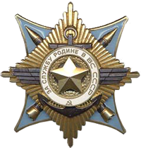

Награды за службу в
Демократической Республике Афганистан
➤
В данном разделе представлена информация об орденах, медалях, нагрудных знаках, которыми награждались военнослужащие за участие в боевых действиях на территории Демократической Республики Афганистан в период с 1979 по 1989 годы.
Орден Красного Знамени
Орден Красного Знамени является единственным орденом, который в период награждения орденом за выслугу лет, относящихся к 1944–1958 гг., военнослужащий мог получить дважды: за 20 и 30 лет безупречной службы. Это единственный советский знак, на лицевой стороне которого указывалось число, означавшее сколько раз он вручен данному кавалеру.Воевавшим в Афганистане за период 1980–1989 гг., было вручено около 2000 орденов Красного Знамени. Награждение производится по представлению соответственно МО СССР, МВД СССР, КГБ СССР. Воинские части, военные корабли, соединения и объединения, награжденные орденом Красного Знамени, именуются «краснознаменными».
Орден Ленина
Орден Ленина – высшая награда Союза Советских Социалистических Республик. К награждению орденом Ленина за трудовые заслуги могут быть представлены, как правило, лица, самоотверженный труд которых ранее был отмечен другими орденами. Орденом Ленина могут быть награждены и лица, не являющиеся гражданами СССР, а также предприятия, учреждения, организации, населенные пункты иностранных государств. Орден Ленина вручается лицам, удостоенным звания Героя Советского Союза, звания Героя Социалистического Труда, а также городам и крепостям, которым присвоены соответственно звание «Город-Герой», звание «Крепость-Герой».
Орден «За службу Родине в Вооруженых Силах СССР»
Орденом «За службу Родине в Вооружённых Силах СССР» награждаются военнослужащие Советской Армии, Военно-Морского Флота, пограничных и внутренних войск: – за успехи, достигнутые в боевой и политической подготовке, поддержании высокой боевой готовности войск и освоение новой боевой техники; –за высокие показатели в служебной деятельности; – за успешное выполнение специальных заданий командования; – за отвагу и самоотверженность, проявленные при исполнении воинского долга; – за другие заслуги перед Родиной во время службы в Вооружённых Силах СССР.
Медаль «Золотая звезда»
Медаль учреждена 1 августа 1939 года Указом Президиума Верховного Совета СССР «О дополнительных знаках отличия для Героев Советского Союза» для граждан, удостоенных высшей степени отличия – звания «Герой Советского Союза». Первоначально медаль также называлась «Герой Советского Союза», однако согласно Указу Президиума ВС СССР от 16 октября 1939 она стала именоваться как медаль «Золотая Звезда».
Орден Красной Звезды
В период после Великой Отечественной Войны орденом Красной Звезды награждали всех военнослужащих, сотрудников военизированной противопожарной службы и сотрудников правоохранительных органов, погибших при исполнении служебных обязанностей. Орден и орденская книжка на него вручались родственникам погибшего. В ходе локальных конфликтов и Афганской Войны орденом Красной Звезды награждались все советские военнослужащие, получившие в боевых столкновениях ранения средней тяжести, тяжелые ранения либо тяжелые контузии.В ходе локальных конфликтов и Афганской Войны орденом Красной Звезды награждались все советские военнослужащие, получившие в боевых столкновениях ранения средней тяжести, тяжелые ранения либо тяжелые контузии.
Медаль «За боевые заслуги»
Медалью награждался в основном рядовой и сержантский состав, реже – младшие офицерыв. Есть случаи, когда медали удостаивались гражданские лица. Так, летом 1941 года медалью «За боевые заслуги» был награжден 15-летний московский школьник Женя Нефедов за успешную борьбу с немецкими зажигательными бомбами.В послевоенные годы медаль «За боевые заслуги» ценилась так же высоко, как и в годы Великой Отечественной. Тысячи солдат и офицеров, участвующих в боевых действиях на территории Афганистана, в других горячих точках, сегодня с гордостью носят медаль «За боевые заслуги».
Медаль «За отвагу»
Медаль «За отвагу» учреждена в системе российских государственных наград Указом Президента Российской Федерации от 2 марта 1994 г № 442. Ныне серебряной медалью «За отвагу» могут быть награждены военнослужащие, сотрудники органов внутренних дел, другие граждане России и за мужество и отвагу, проявленные в боях, и при выполнении специальных заданий по обеспечению государственной безопасности, при защите конституционных прав граждан в условиях, сопряжённых с риском для жизни.Эта награда являлась высшей медалью СССР и оставалась таковой до распада Советского Союза.
Медаль «За отличие в охране государственной границы СССР»
Медалью награждались военнослужащие погранвойск МГБ, МВД, КГБ СССР и лица из числа гражданского населения: – за храбрость и самоотверженность, проявленные в боевых действиях при задержании нарушителей государственной границы СССР; – за умелое руководство боевыми действиями пограничного наряда при защите неприкосновенности границы СССР; – за высокую бдительность и инициативные действия, в результате которых были задержаны нарушители государственной границы; – за умелую организацию пограничной службы и примерную работу по укреплению государственных границ СССР; – за безупречное несение службы по охране государственных границ СССР.
Нагрудный знак «Воину-интернационалисту»
Первоначально знаком предполагалось награждать советских воинов, исполнявших интернациональный долг в Республике Афганистан. Однако несколько позже список был расширен и к проходившим службу в Афганистане были добавлены участники конфликтов в Анголе, Алжире, Корее, Египте, Вьетнаме, Сирии, Йемене, Эфиопии и других странах в определенные в приказе периоды. Знак вручался вместе с грамотой Президиума Верховного Совета СССР. Грамота вкладывалась в специальную обложку красного цвета. За исполнение интернационального долга в Республике Афганистан знаком награждались все военнослужащие, проходившие службу в рядах Ограниченного контингента советских войск в Афганистане.
Орден «Звезда»
 Орден «Звезда» – государственная награда Демократической республики Афганистан.
Награждение орденом «Звезда» производилось:
– за исключительную личную храбрость, мужество и бесстрашие в боевой обстановке;
– за отличную организацию и проведение боевых операций, при которых противнику нанесены крупные поражения;
– выдающуюся деятельность по повышению боеспособности вооруженных сил и укреплению обороноспособности ДРА.
В 1987 г. в связи с изменением государственного герба вид центральной части знака ордена был изменен. Орден «Звезда» изготавливался в Москве, однако существуют экземпляры этого ордена, изготовленные в Афганистане. Ордена, изготовленные в Афганистане, имеют более грубую работу.
Орден «Звезда» – государственная награда Демократической республики Афганистан.
Награждение орденом «Звезда» производилось:
– за исключительную личную храбрость, мужество и бесстрашие в боевой обстановке;
– за отличную организацию и проведение боевых операций, при которых противнику нанесены крупные поражения;
– выдающуюся деятельность по повышению боеспособности вооруженных сил и укреплению обороноспособности ДРА.
В 1987 г. в связи с изменением государственного герба вид центральной части знака ордена был изменен. Орден «Звезда» изготавливался в Москве, однако существуют экземпляры этого ордена, изготовленные в Афганистане. Ордена, изготовленные в Афганистане, имеют более грубую работу.
Орден «Дружба народов»
Орден «Дружба народов» – государственная награда Демократической республики Афганистан. Награждение орденом «Дружба народов» производилось: – выдающийся труд в деле пропаганды и укрепления братской дружбы всех племен и народностей Афганистана; – достижения в труде, направленном на рост и укрепление национальной экономики ДРА; в отличную службу в государственном и национальном строительстве; – заслуги в политическом развитии, обогащении и взаимном культурном обмене племен и народностей Афганистана, за активное участие в воспитании граждан в духе дружбы и пролетарского интернационализма и преданности Родине;
Орден «Слава»
Награждение орденом «Слава» производилось: – за выдающуюся государственную и общественную деятельность; – за большие успехи в развитии национальной культуры, литературы и искусства; – за особую плодотворную деятельность в подготовке национальных кадров; – за безупречную работу в государственном аппарате, направленную на всемерное развитие и укрепление завоеваний Саурской революции. Кому вручается граждане ДРА, иностранные граждане, организации, предприятия, провинции и города
Орден «За храбрость»
Награждение орденом «За храбрость» производилось: – за личную храбрость, проявленную в боях; – за успешные боевые действия воинских частей и соединений, в результате которых противнику было нанесено поражение или значительный урон; – за отвагу и стойкость, проявленную при выполнении воинского и служебного долга, в условиях, сопряженных с риском для жизни; – за героизм, проявленный при защите мирного населения, а также государственного и общественного имущества от посягательства врага. Кому вручается военнослужащие ДРА, сотрудники Главного управления службы государственной информации при Совете Министров ДРА и министерства внутренних дел ДРА; воинские части и соединения, а также иностранные граждане
Медаль «Воину-интернационалисту от благодарного афганского народа»
Медалью награждались все военнослужащие, проходившие службу в рядах Ограниченного контингента советских войск в Афганистане.Медаль изготовлена из латуни. На аверсе изображен флаг Афганистана, наложенный на флаг СССР. Древка флагов упираются в композицию из гор, над которыми всходит солнце. От гор, по окружности положена оливковая ветвь.Кому вручается военнослужащие, проходившие службу в рядах Ограниченного контингента На реверсе в центре надпись: «ОТ БЛАГОДАРНОГО АФГАНСКОГО НАРОДА» в две строки, ниже по окружности надпись повторятся на языке пушту.
Медаль «15 лет вывода советских войск из Демократической Республики Афганистан»
Памятная юбилейная медаль разработана специалистами Региональной общественной организации «Академия русской символики «МАРС», а изготовлена московской производственной компанией «Орел и Ко».Вручается участники боевых действий и специальных операций в Афганистане, а также государственные и общественные деятели, руководители органов исполнительной власти и ветеранских организаций стран Содружества, участники войны в Афганистане Кому вручается участники боевых действий и специальных операций в Афганистане, а также государственные и общественные деятели, руководители органов исполнительной власти и ветеранских организаций стран Содружества, участники войны в Афганистане и других локальных войн и конфликтов
Медаль «Ветеран боевых действий»
Медаль «Ветеран боевых действий» является особой формой отличия граждан Содружества Независимых Государств, являющиеся участниками войны в Афганистане, других локальных войн, военных конфликтов за пределами бывшего СССР. К положению о награде прилагается список войн и конфликтов, за участие в которых награждаются данной медалью Источником финансирования изготовления медали «Ветеран боевых действий» и удостоверений к нему являются Комитет по делам воинов-интернационалистов при Совете глав правительств государств-участников СНГ, а также государственные и общественные организации стран Содружества.
Медаль «В память 10-летия вывода советских войск из Афганистана»
.png) Медаль вручается Президентом Республики Беларусь или по поручению Президента Республики Беларусь и от его имени: министрами и председателями государственных комитетов; заместителями Министра обороны, командующими Военно-воздушными силами, Войсками противовоздушной обороны, командирами соединений Вооруженных Сил; председателями областных и Минского городского исполнительных комитетов; военными комиссарами.
Медаль вручалась всем гражданам Республики Беларусь, которые исполняли свои военные и служебные обязанности в Афганистане в 1979–1989 годах.
Медаль вручается Президентом Республики Беларусь или по поручению Президента Республики Беларусь и от его имени: министрами и председателями государственных комитетов; заместителями Министра обороны, командующими Военно-воздушными силами, Войсками противовоздушной обороны, командирами соединений Вооруженных Сил; председателями областных и Минского городского исполнительных комитетов; военными комиссарами.
Медаль вручалась всем гражданам Республики Беларусь, которые исполняли свои военные и служебные обязанности в Афганистане в 1979–1989 годах.
Медаль «20 лет вывода советских войск из Афганистана»
.png) Юбилейная медаль «20 лет вывода советских войск из Афганистана» является официальной наградой Республики Беларусь.
Юбилейная медаль вручается:
– Президентом Республики Беларусь;
– руководителями государственных органов или по их поручению их заместителями либо руководителями иных государственных организаций;
– командующими видами Вооруженных Сил Республики Беларусь, силами специальных операций, войсками оперативных и оперативно-тактических командований, начальниками военных учреждений образования;
– командирами воинских частей;
– военными комиссарами.
Медаль вручалась всем гражданам Республики Беларусь, которые исполняли свои военные и служебные обязанности в Афганистане в 1979–1989 годах.
Юбилейная медаль «20 лет вывода советских войск из Афганистана» является официальной наградой Республики Беларусь.
Юбилейная медаль вручается:
– Президентом Республики Беларусь;
– руководителями государственных органов или по их поручению их заместителями либо руководителями иных государственных организаций;
– командующими видами Вооруженных Сил Республики Беларусь, силами специальных операций, войсками оперативных и оперативно-тактических командований, начальниками военных учреждений образования;
– командирами воинских частей;
– военными комиссарами.
Медаль вручалась всем гражданам Республики Беларусь, которые исполняли свои военные и служебные обязанности в Афганистане в 1979–1989 годах.